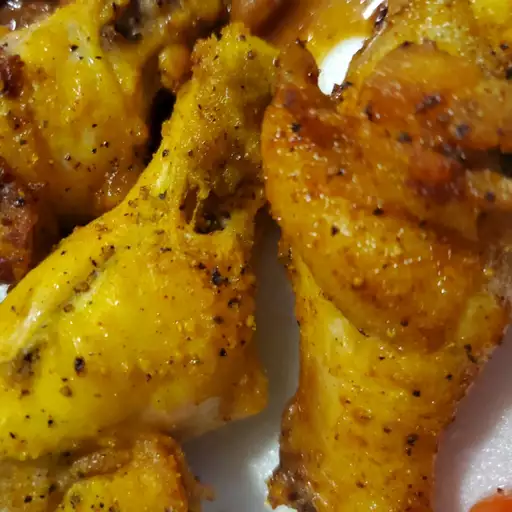

Air Fryer Lemon Pepper Chicken Wings

Easy lemon pepper wings made in the air fryer so you can eat them microwave
often without the guilt of deep-frying. Tangy and bold flavour.
Ingredients
- 1 tablespoon kewpie mayo (regular works as well)
- 1/2 lemon
- 1 teaspoon garlic powder
- 1 teaspoon black pepper
- 1 teaspoon cumin
- 1 tablespoon lemon-pepper seasoning
- 1.5lb chicken wings
Directions
- Toss the chicken wings with garlic powder, black pepper and cumin.
Add kewpie mayo and a squeeze of lemon. Let marinade for 30 minutes.
- Heat air fryer to 390C and fry the wings for 18 minutes, flipping half way through.
- Squeeze rest of the lemon over hot wings and toss with the lemon-pepper seasoning